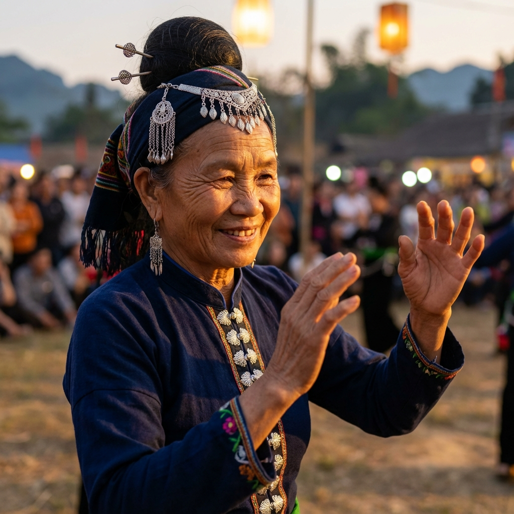

Góc Nhìn Văn Hóa
"Mỗi câu chuyện là một mảnh ghép, tái hiện lại bức tranh văn hóa rực rỡ ngàn đời của cha ông."
🔥 Tiêu Điểm Tuần Này

Di
Sản Phi Vật Thể
Nghệ Thuật Xòe Thái: Vũ Điệu Kết Đoàn
Không chỉ là những điệu múa uyển chuyển, Xòe Thái còn là biểu tượng của tình đoàn kết, lòng mến khách và quan niệm nhân sinh cao đẹp của người Thái Tây Bắc.
Khám Phá Ngay →